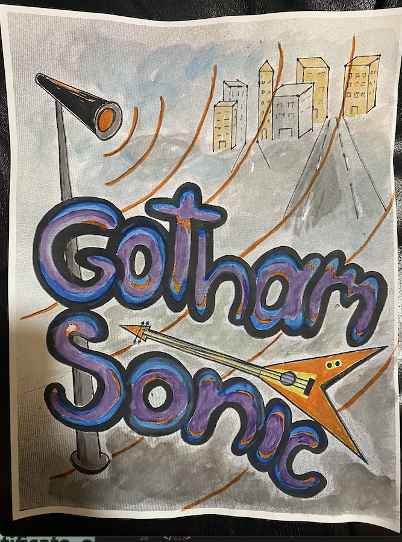
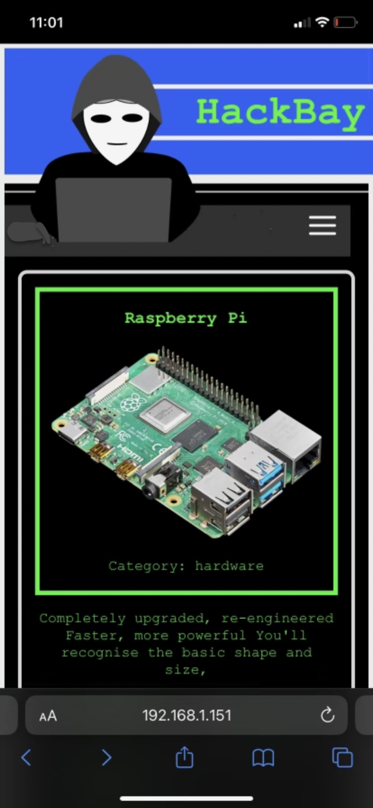
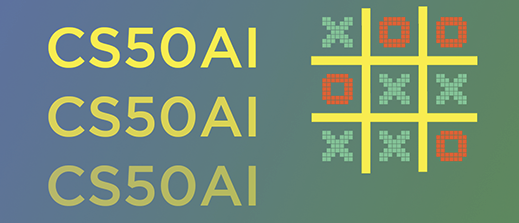

Hi, I'm Daniel Gray, a versatile software developer with a Physics degree from Columbia University (2011) and a Master's degree in Computer Science from NYU (2022). Not just a web developer, I am a jack of all trades with keen interests in building innovative websites, diving into artificial intelligence, and strengthening cybersecurity. Recognized in the top 3 percent on TryHackMe, I am not only adept at developing my own projects but also an idea man passionate about creating unique user experiences. My project, GothamSonic, exemplifies my commitment to aesthetics and user-centric design.
GothamSonic.com
A New York City community music site with the best concert calendar in NYC. Users can create accounts, upload, and listen to songs. Designed with its own API, it utilizes React for the front end and Django for the backend, offering a seamless SPA (Single Page Application) experience.
HackBay.net
Inspired by the CS50W project "Commerce", HackBay.net is an online marketplace that empowers users to list items for sale, bid on products, and build an e-commerce community.
ChitChattle.com
My take on the Harvard CS50 Web project "Network", ChitChattle.com is a social media platform allowing users to share updates, connect with others, and form a community of like-minded individuals.
Question Answerer == IBM watson-like question and answering system
A venture into artificial intelligence, Questions is a Watson-like question and answering system that showcases my expanding interest and capabilities in AI, derived from the CS50AI class project.